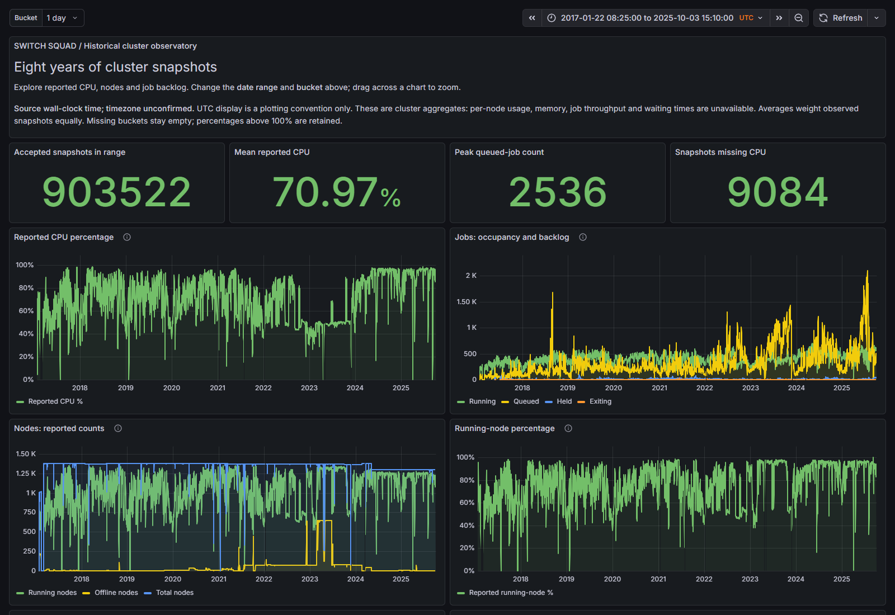
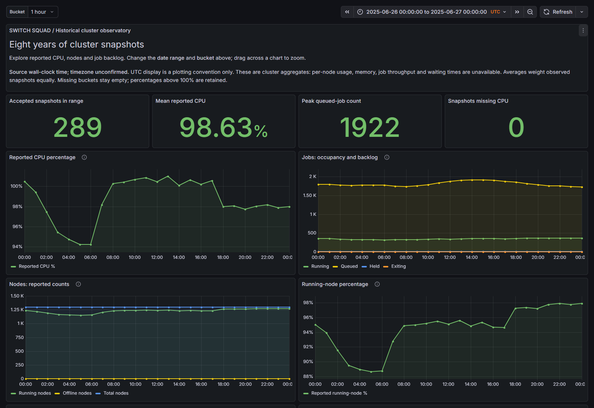

<!doctype html><html lang="en"><meta charset="utf-8"><title>Switch Squad slides</title><style>
@page {size:13.333in 7.5in; margin:0} *{box-sizing:border-box} body{margin:0;font-family:Arial,sans-serif;color:#113c42;background:#fafcf9}
.slide{width:13.333in;height:7.5in;padding:.4in .55in;position:relative;break-after:page;overflow:hidden}
header{font-size:13pt;color:#14786b;letter-spacing:2px;font-weight:bold} h1{font-size:34pt;margin:.3in 0 .3in;line-height:1.1}
.content{font-size:24pt;line-height:1.3}ul{margin:0;padding-left:.3in}li{margin-bottom:.16in}.with-image{display:grid;grid-template-columns:3.9in 7.7in;gap:.45in;font-size:20pt}.with-image img{width:100%;max-height:4.7in;object-fit:contain;object-position:top}
footer{position:absolute;bottom:.25in;left:.55in;right:.55in;font-size:10pt;color:#14786b}footer span{float:right}
</style><section class="slide"><header>SWITCH SQUAD / SCC 2026</header><h1>From cluster logs<br>to evidence</h1><div class="content "><ul><li>Switch Squad · SCC 2026</li><li>A reproducible historical HPC dashboard</li><li>Prepared 16 November 2026</li></ul></div><footer>Repository evidence · 16 November 2026 <span>01 / 10</span></footer></section><section class="slide"><header>SWITCH SQUAD / SCC 2026</header><h1>Start with what the data supports</h1><div class="content "><ul><li>3,169 files; 917,919 nonblank source rows</li><li>January 2017 to October 2025; roughly five-minute observations</li><li>Reported CPU, node counts and aggregate job-state counts</li><li>No node IDs, memory, job arrivals or completions</li></ul></div><footer>Repository evidence · 16 November 2026 <span>02 / 10</span></footer></section><section class="slide"><header>SWITCH SQUAD / SCC 2026</header><h1>One traceable pipeline</h1><div class="content with-image"><ul><li>Validate both log formats; preserve NULLs</li><li>Deduplicate identical rows; quarantine every conflicting timestamp</li><li>Store accepted rows; analyse with SQL; explore in Grafana</li></ul></div><footer>Repository evidence · 16 November 2026 <span>03 / 10</span></footer></section><section class="slide"><header>SWITCH SQUAD / SCC 2026</header><h1>Quality is part of the result</h1><div class="content "><ul><li>903,522 accepted snapshots</li><li>12,489 extra identical duplicates</li><li>937 conflicting timestamps → 1,907 quarantined variants</li><li>1 rejected row; row accounting passes</li><li>9,084 missing CPU values; 212 reported CPU values above 100%</li></ul></div><footer>Repository evidence · 16 November 2026 <span>04 / 10</span></footer></section><section class="slide"><header>SWITCH SQUAD / SCC 2026</header><h1>Explore the working dashboard</h1><div class="content with-image"><ul><li>Absolute date range + hour/day/week buckets</li><li>CPU, job backlog, nodes and observation coverage</li><li>Actual Grafana screenshot · 16 November 2026</li></ul></div><footer>Repository evidence · 16 November 2026 <span>05 / 10</span></footer></section><section class="slide"><header>SWITCH SQUAD / SCC 2026</header><h1>Observed findings, with context</h1><div class="content "><ul><li>70.97% mean reported CPU, across 894,438 CPU-present snapshots</li><li>98.63% highest daily mean with ≥200 CPU samples: 26 June 2025</li><li>2,536 maximum observed queued-job count</li><li>Largest accepted-snapshot gap: 4 days, 5 minutes</li><li>Snapshot-weighted results; changing capacity limits comparisons</li></ul></div><footer>Repository evidence · 16 November 2026 <span>06 / 10</span></footer></section><section class="slide"><header>SWITCH SQUAD / SCC 2026</header><h1>Trust comes from comparison</h1><div class="content "><ul><li>All 903,522 rows and all 12 database fields match the clean CSV</li><li>Repeat import: 0 inserted; 903,522 identical rows skipped</li><li>43 tests + 13 subtests pass with real TimescaleDB</li><li>36 panel-query checks; Chrome UI and bucket-click checks</li><li>Linux tooling container independently verifies the stored data</li></ul></div><footer>Repository evidence · 16 November 2026 <span>07 / 10</span></footer></section><section class="slide"><header>SWITCH SQUAD / SCC 2026</header><h1>An honest boundary</h1><div class="content "><ul><li>CPU percentage semantics and source timezone remain unconfirmed</li><li>No per-node usage, memory, throughput or individual wait time</li><li>Missing buckets stay empty; no artificial snapshot records</li><li>Local Linux-container deployment verified; no VirtualBox cluster claimed</li></ul></div><footer>Repository evidence · 16 November 2026 <span>08 / 10</span></footer></section><section class="slide"><header>SWITCH SQUAD / SCC 2026</header><h1>Live demo: ask a narrower question</h1><div class="content with-image"><ul><li>Open the historical dashboard and its coverage panels</li><li>Choose 26 June 2025; switch Bucket to 1 hour</li><li>Hover CPU and queue-count series</li><li>Show the verification evidence and CI</li><li>Fallback: actual screenshots and PDF, clearly labelled</li></ul></div><footer>Repository evidence · 16 November 2026 <span>09 / 10</span></footer></section><section class="slide"><header>SWITCH SQUAD / SCC 2026</header><h1>What we accomplished</h1><div class="content "><ul><li>Raw logs → validated storage → supported analysis → interactive dashboard</li><li>Reproducible Linux/Windows workflow and real-database tests</li><li>Evidence-backed poster, journal, slides and demo guide</li><li>Next: confirm requirements and rehearse the presentation</li><li>Repository: github.com/chpc-tech-eval/switch-squad-hpc-log-viz</li></ul></div><footer>Repository evidence · 16 November 2026 <span>10 / 10</span></footer></section></html>